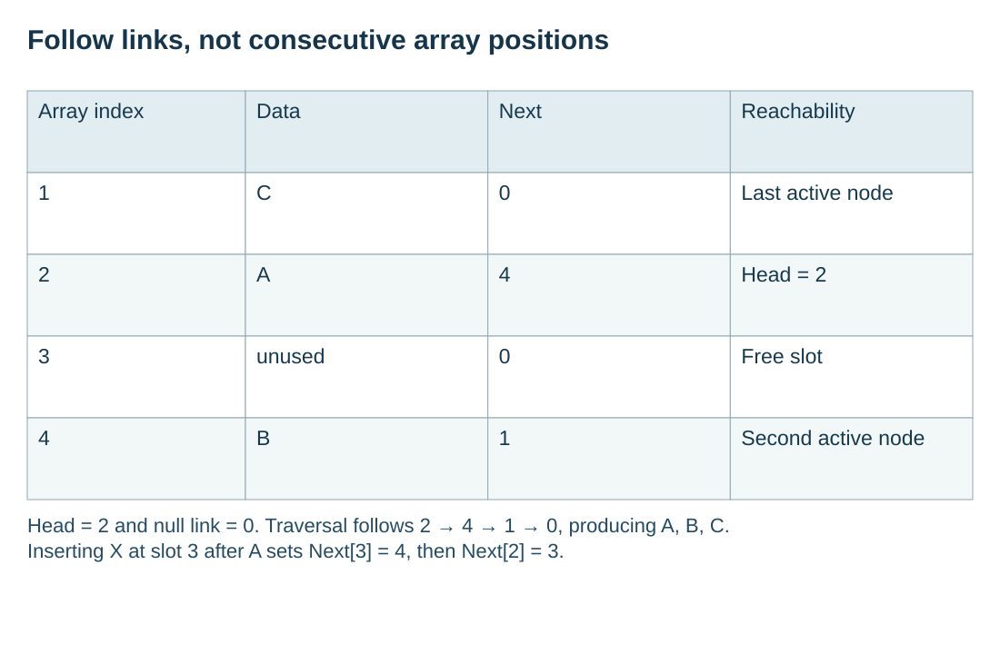

Represent a sequence using nodes and links
Visual overview
Follow links, not consecutive array positions

Visual transcript
- Array index: 1; Data: C; Next: 0; Reachability: Last active node.
- Array index: 2; Data: A; Next: 4; Reachability: Head = 2.
- Array index: 3; Data: unused; Next: 0; Reachability: Free slot.
- Array index: 4; Data: B; Next: 1; Reachability: Second active node.
- Head = 2 and null link = 0. Traversal follows 2 → 4 → 1 → 0, producing A, B, C.
- Inserting X at slot 3 after A sets Next[3] = 4, then Next[2] = 3.
Core explanation
Nodes, head and the null link
A linked list contains nodes, each holding data and a link to the next node. A head pointer identifies the first node. In the model used here, a link value of 0 means no next node; Head = 0 represents an empty list. The last active node has a null link.
Logical order follows the links
Logical order is determined by links, not by consecutive storage positions. Follow the head and successive links to traverse the list. A linked list suits a sequence that needs insertions or deletions between neighbours because changing links can avoid shifting every following data item, although locating the required node may still require traversal.
Worked example · Traverse a non-contiguous list
- Start
Head = 2, so read Data[2] = A.
- Follow links
Next[2] = 4 gives B; Next[4] = 1 gives C.
- Stop
Next[1] = 0 ends traversal. The output order is A, B, C.